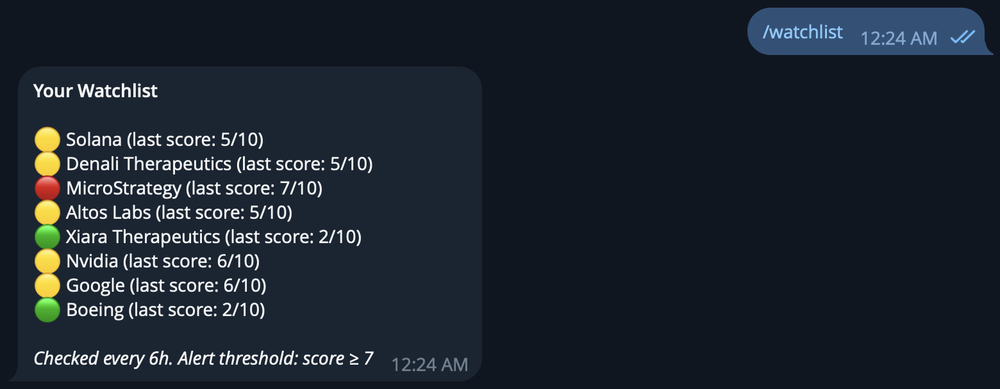
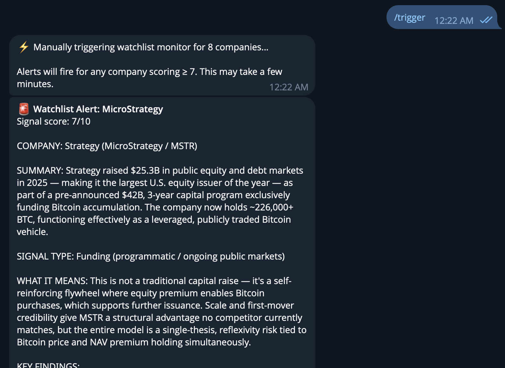
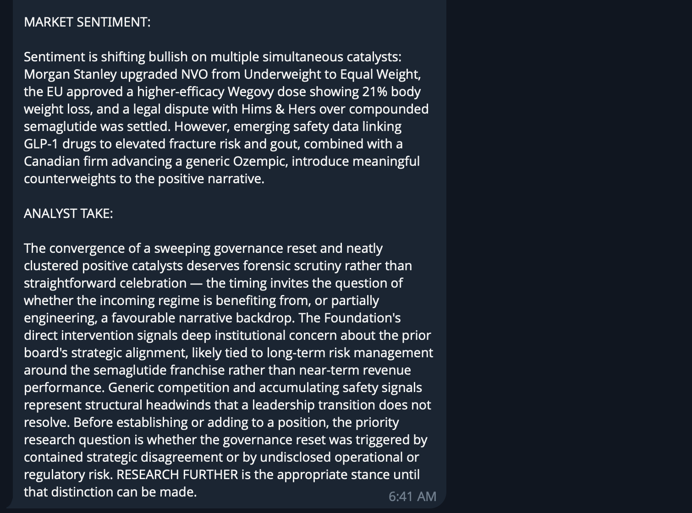
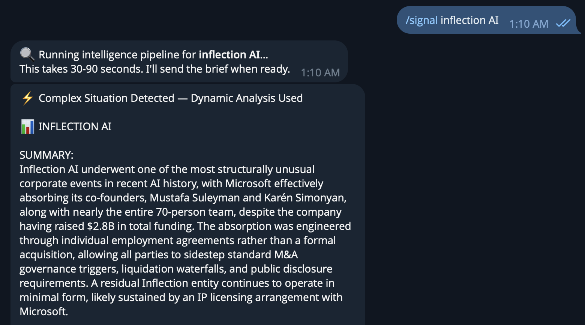
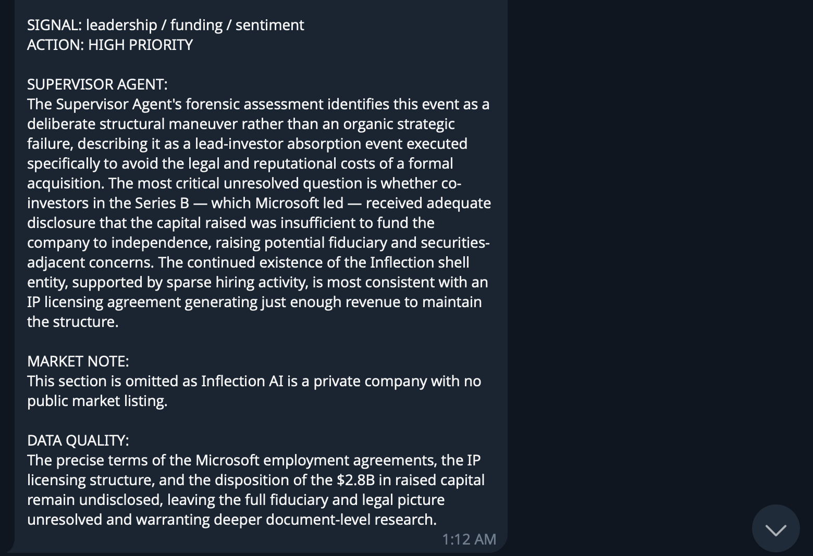
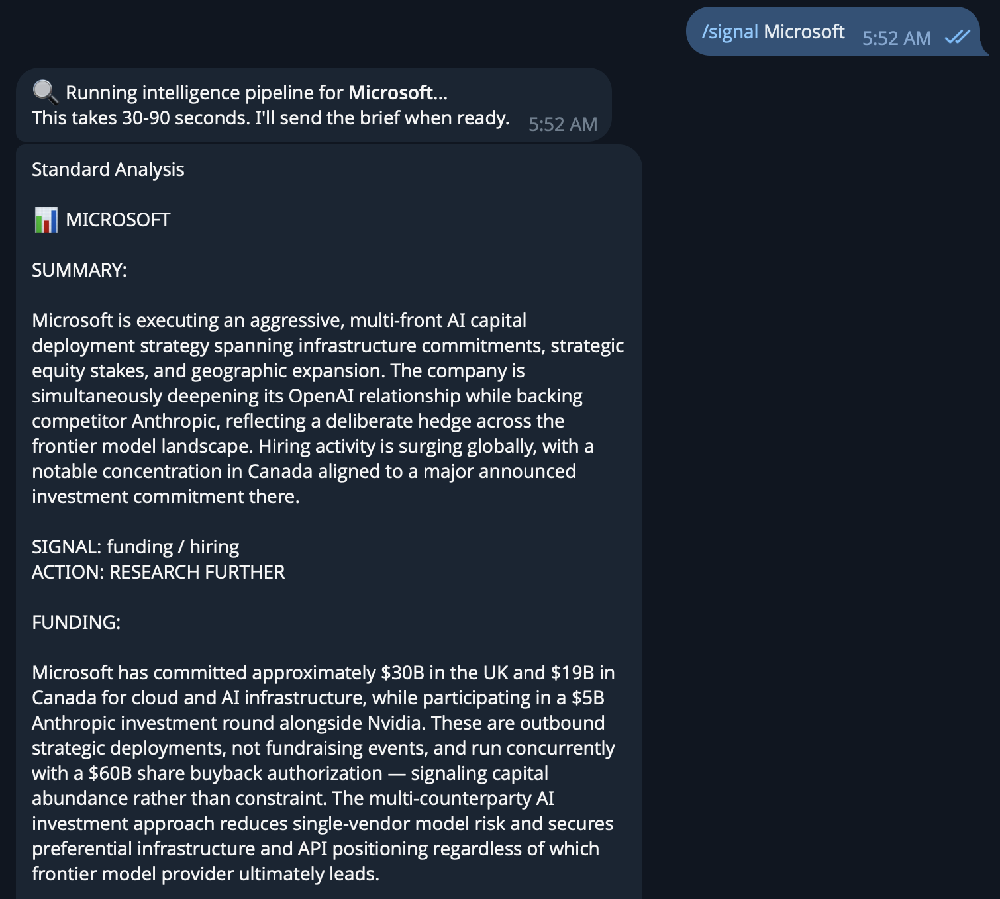
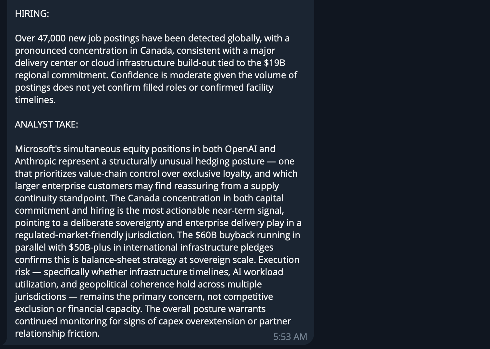

A multi-agent intelligence system that monitors AI and tech companies for meaningful signals: funding events, hiring spikes, leadership changes, and sentiment shifts. Built to inform both career and investment decisions by surfacing what matters before it becomes obvious. Delivered through Telegram.
Query any company on demand, or add companies to a persistent watchlist that autonomously alerts you when a signal threshold is crossed. Not on a timer, but when something meaningful is actually detected.
/signal [company] and the full intelligence pipeline runs immediately. The scout agent gathers data, the orchestrator routes to the right agents, and a structured brief is delivered in 30 to 90 seconds. Any company works./watch and a lightweight background scout checks each one every 6 hours. When a company's signal score hits 6 or above, the full pipeline fires automatically and an alert is sent without any manual query needed.Commands
A scout agent runs first on every query. Its findings determine what happens next: either conditional routing to pre-built agents for known signal patterns, or dynamic agent spawning for novel situations. Hover each node to learn more.
Every query returns a signal score from 0 to 10. That score is the load-bearing element of the entire system — it determines routing, triggers alerts, and decides whether a standard agent or a purpose-built one runs.
Four Scoring Dimensions
Data Sources
The scout pulls from six sources on every query: real-time news, web search, market data, SEC filings, institutional-grade financial metrics, and options flow. Together they cover the full signal surface a company can emit.
Every architectural choice was made deliberately. Here's the reasoning behind each one.
Real outputs from the deployed bot. Each screenshot shows a different part of the system working.
Eight companies under active monitoring. Color-coded signal scores updated each time the lightweight scout runs. Any company scoring 6 or above triggers the full pipeline automatically.

The watchlist monitor fires for Novo Nordisk at signal score 6/10, triggering dynamic agent spawning. The scout detects a contradictory signal environment: a sweeping governance reset driven directly by the Novo Nordisk Foundation alongside a cluster of positive catalysts including a Morgan Stanley upgrade, EU approval of a higher-efficacy Wegovy dose, and a settled legal dispute. The ANALYST TAKE flags the timing as deserving forensic scrutiny rather than straightforward celebration and correctly identifies the priority research question as whether the governance reset was triggered by contained strategic disagreement or undisclosed operational risk.


Inflection AI triggers dynamic agent spawning. The Complex Situation Detected flag appears because the scout returned a high novelty score. Microsoft's acqui-hire of nearly the entire team while the corporate entity continued operating does not fit any standard routing pattern. The supervisor spawned a purpose-built agent configured with the exact structural situation found.


A standard routing result on a large cap company with multiple active signals. The scout detects a funding and hiring signal simultaneously: $30B committed in the UK, $19B in Canada, a $5B stake in Anthropic alongside Nvidia, and over 47,000 new job postings concentrated in Canada. The ANALYST TAKE correctly identifies Microsoft's multi-counterparty AI investment posture as a deliberate hedge across the frontier model landscape rather than a conviction bet on any single provider, and flags the Canada concentration as the most actionable near-term signal.

